Workwear & Equipment User guide
The app records workwear and safety equipment given to employees. You prepare an order and mark it as ordered. After the employee receives the items, they confirm receipt, and the app keeps a locked record in English and Russian.
1Sign in
- Open workwear.gavort.nl and sign in with your email and password.
- Your first screen depends on your role:
- Administrators start on the Dashboard.
- Managers start on the Manager Dashboard.
- The employee role starts on the Employee Dashboard.
The sidebar holds every section and Search… (⌘K). Help, Keyboard shortcuts, your account and Sign out are at its foot.
With Keep me signed in ticked, you stay signed in on this device after closing the app or restarting the device, for up to 30 days, or until you have not used it for 14 days. On a shared computer, untick it: you are signed out when the browser closes, and after 12 hours at the latest.
Sign out ends your sign-in on this device. When you change your password, your other devices are signed out. When an administrator resets your password or deactivates your account, you are signed out everywhere.
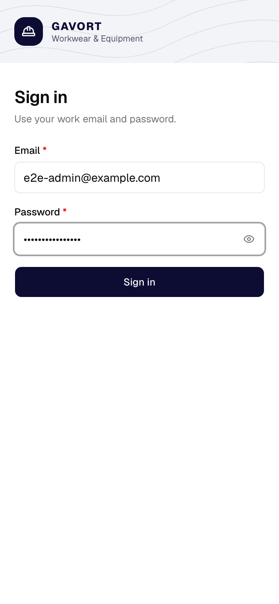
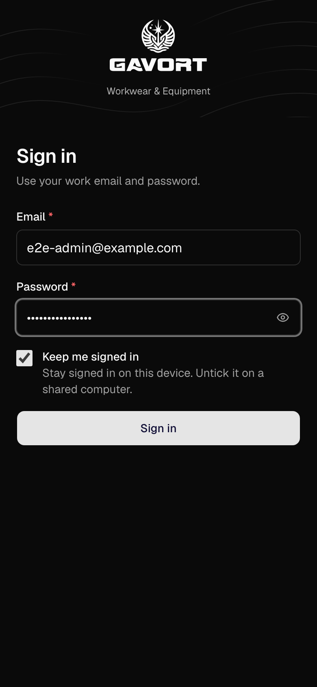
2Dashboard
Administrators only
The figures at the top show the orders awaiting confirmation, this month's spending and the replacements due.
Needs you lists what to do next, most urgent first. Each line has a button for its task:
- An overdue item: Reorder.
- An unconfirmed order: Send link.
- A missing size: Add sizes.
- An item without a price: Fix.
The Backups card says whether the database is backed up. Choose it to open Backups in Administration.
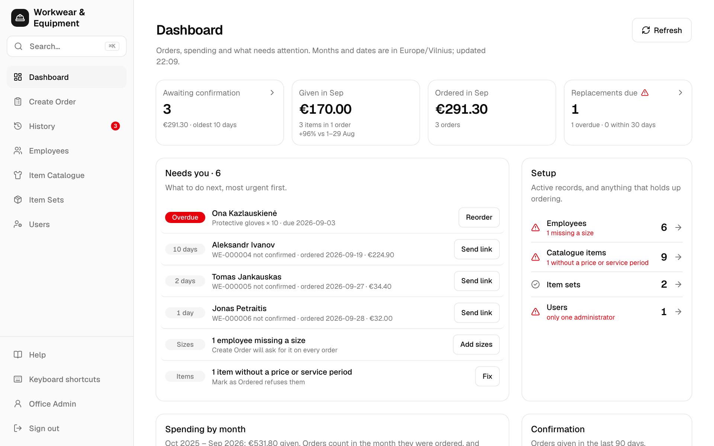
Managers only
The Manager Dashboard covers items, prices and purchasing: what is on order, spending by item, the replacements that will need buying, recent price changes, what holds up ordering in the catalogue and item sets, and the sizes to stock.
The employee role only
The Employee Dashboard starts with what needs doing: your orders still waiting for the employee's confirmation (Send link), items due for replacement and employees missing a size. Below are your orders by month and those given recently.
3Create an order
- On Orders, choose Create Order at the top.
- In Assigned to, type part of the employee's name. For someone new, choose + Add New Employee.
- Add the items:
- Item Set adds a whole kit in one tap.
- Add Item adds one item. Press / to jump to it.
- Check each line's size and quantity:
- Sizes come from the employee's saved sizes. Clothing is picked by letter, for example S (44–46).
- You can't order until every missing size is chosen.
- If you choose a size other than the employee's saved one, you're asked Different size selected. Save it to employee profile? Save keeps it for their future orders; Skip size update uses it on this order only.
- Choose Review and mark as ordered in the panel on the right, or press ⌘/Ctrl Enter.
This device keeps a draft of the order while you work. Copy for WhatsApp, for the supplier's message, is in the review.
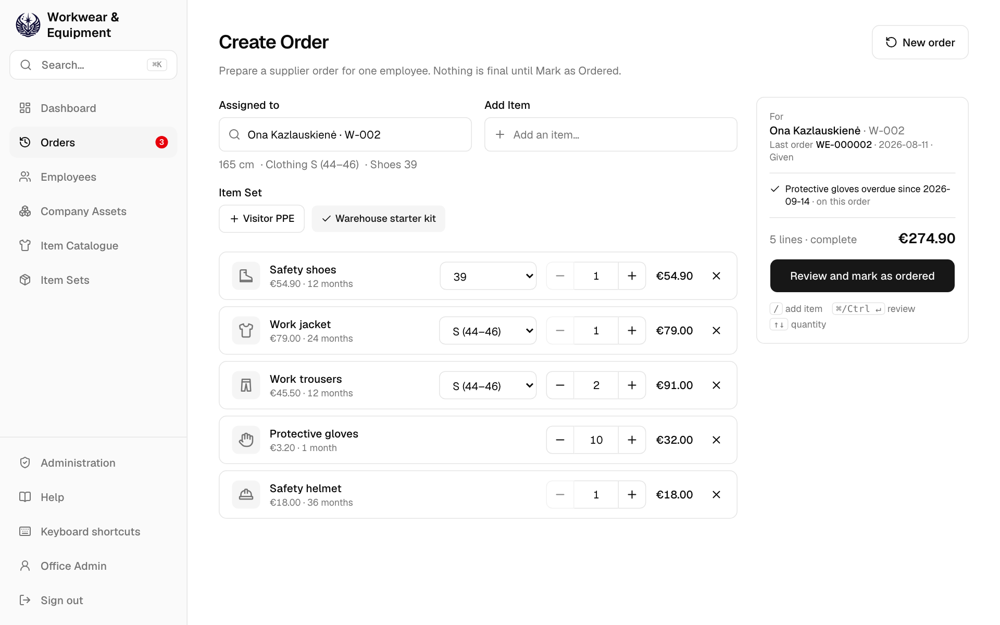
4Review and Mark as Ordered
- Check the lines and the total.
- Choose Mark as Ordered. The order is now Ordered, and you can no longer edit it. The app also creates the employee's confirmation link.
- Send the employee the link with Share link via WhatsApp or Copy link. The link is valid for 7 days, and the app shows it only once.
If the employee will sign on paper, choose Print record instead.
Copy for WhatsApp, in the review, copies the message for the supplier. When an administrator has set the supplier's WhatsApp group in Administration, on Settings, it then offers to open that group: paste the message there.
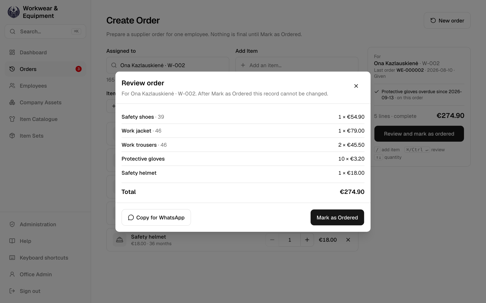
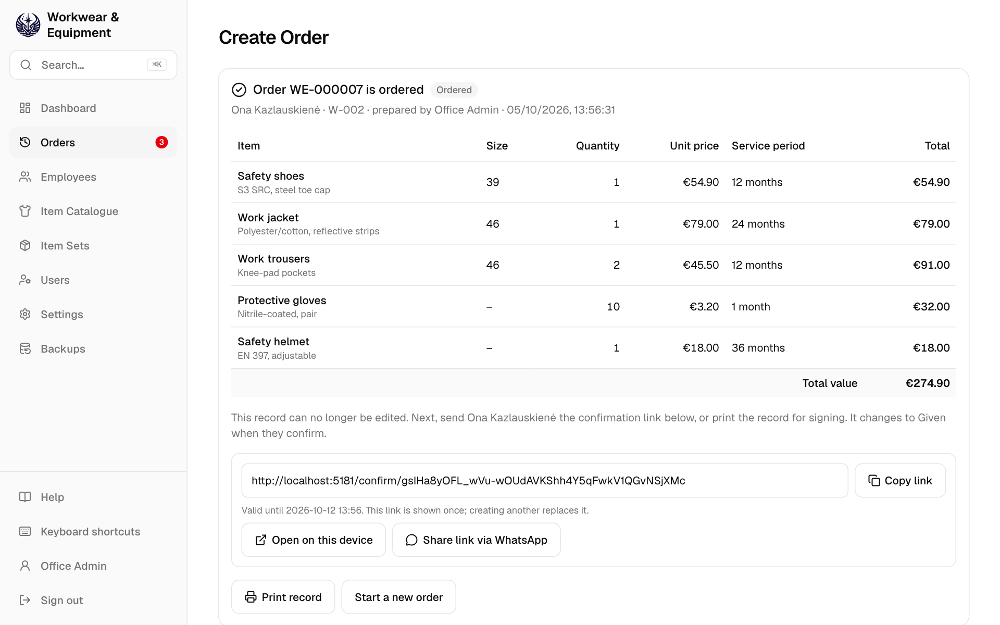
5The employee confirms
- The employee opens the link. They don't need an account.
- They check the items, their prices and the total, in English or Russian (EN / RU). The page opens in their preferred language when it is English or Russian.
- They tick the statement and tap Confirm receipt. The order becomes Given.

6Orders
Orders lists every order placed. Create Order, at the top, starts a new one.
Awaiting, Given and All filter the orders by status. You can also filter by employee and date. Click a record number to open the order beside the list. J and K move between orders, and Esc closes the order.
An Ordered order has these actions:
- Open Employee Confirmation makes a new link. It also records a signed paper copy (Record signed paper confirmation).
- Hand over now turns this device to the employee, who confirms on it in person.
- Print Record prints the record for signing.
Managers only
⋯ → Delete order… removes an order, such as a test order, after asking.
An order's Changes list what happened to it and who did it: ordered, a link made or opened, given.
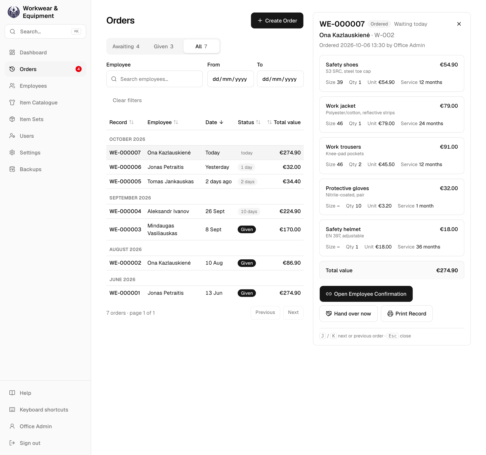
7Items Given Record
A Given order has a locked record in English and Russian. Open it with View Record.
- Print Record prints it on one A4 page.
- Share via WhatsApp sends it.
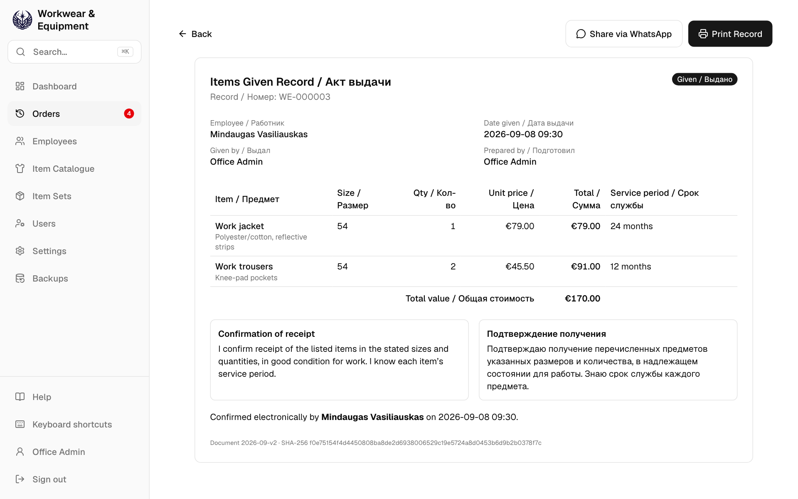
8Employees
The list shows each employee's sizes and note, and marks anyone missing a size. A long note is cut to one line; point at it to read it all, or open the employee.
Each employee's page shows:
- their sizes and preferred language;
- every item given, with its usage time and replacement date;
- orders not yet given;
- Changes: who changed their details or sizes, and when.
From that page, New order starts an order for them, and Edit Sizes changes their sizes.
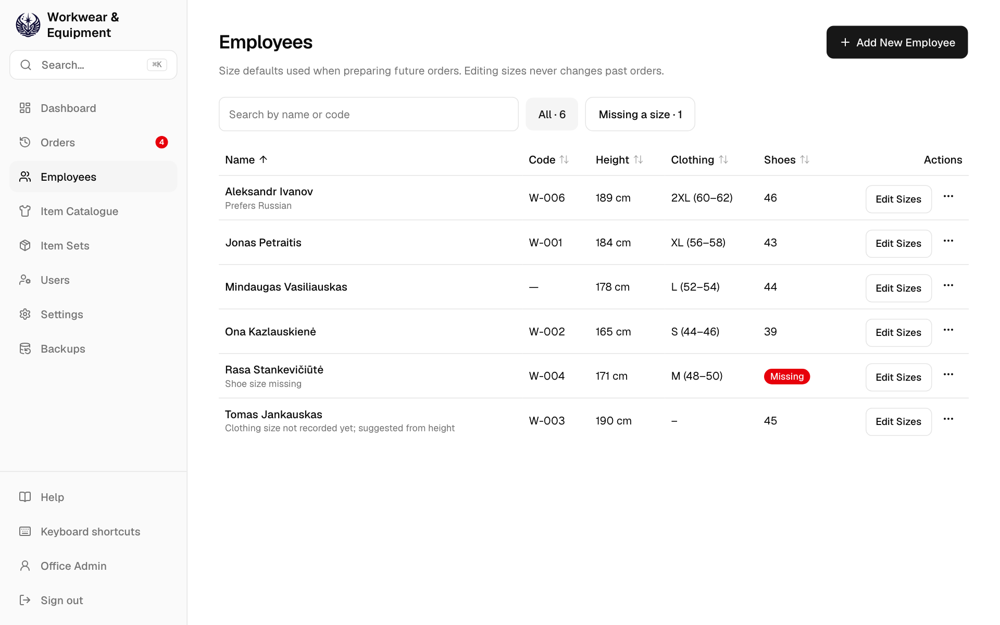
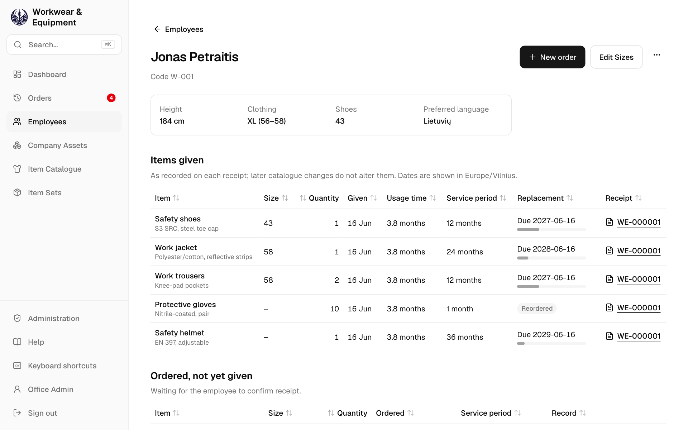
9Item Catalogue and Item Sets
Each catalogue item has a price, a service period and a size group. Orders show and total the price. You can't order an item without a price or service period. Changing a price never alters existing orders.
An item can also have a Purchase price: what we pay the supplier. It is optional, never needed to order, and orders don't show it. The item's page shows both prices and how they changed, and its Changes list who changed the item, and when.
An item set is a kit of items with default quantities. You apply it on Create Order in one tap.
Administrators and managers only
You add and change items in Item Catalogue, and kits in Item Sets.
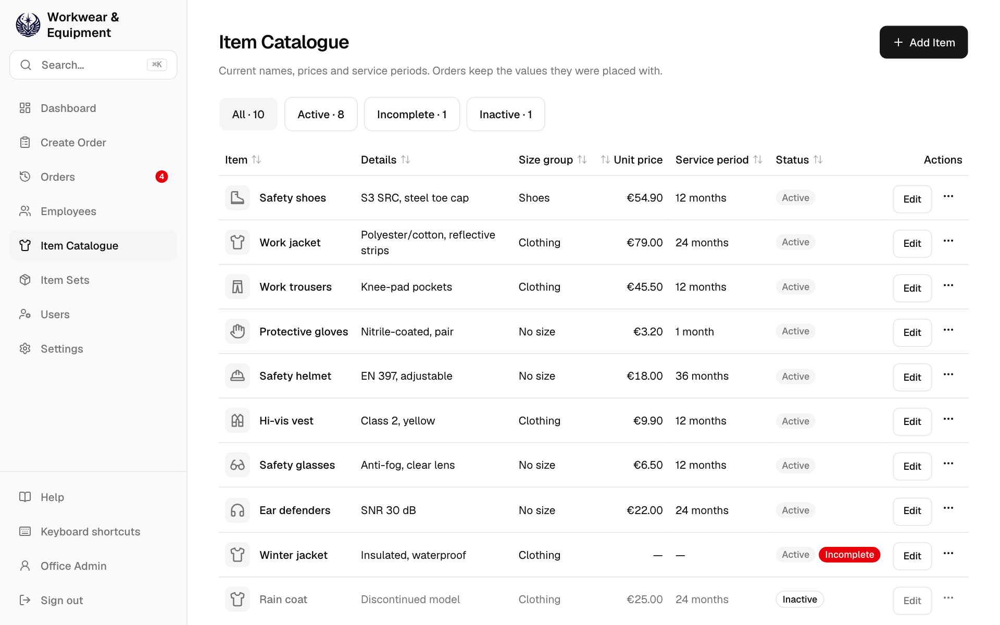
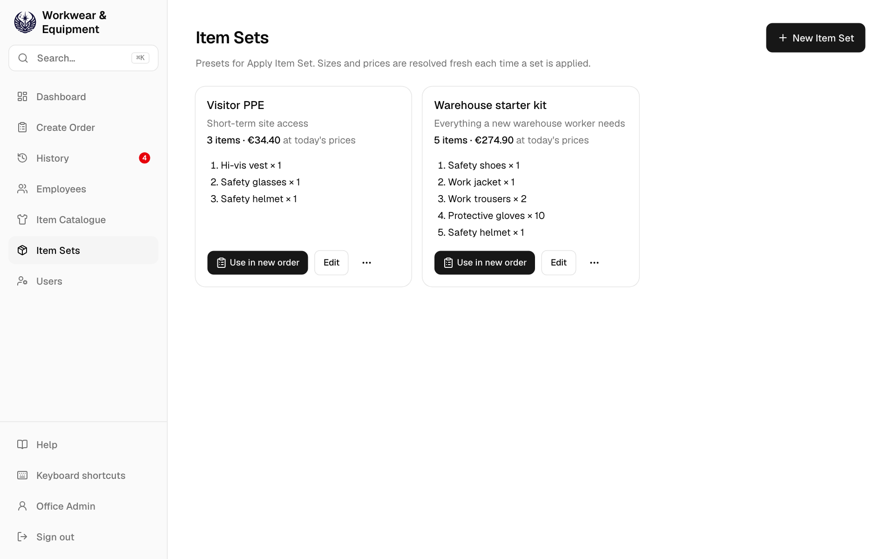
10Administration
Administrators only
Administration is where you manage who may use the app and what they may do, watch over how it runs, and keep the organisation's settings. It opens on Overview. Its other screens are Users, Roles & permissions, Audit log, Security, System, Usage and Settings.
Open it with Administration at the foot of the sidebar. It has a sidebar of its own; Workwear & Equipment, at its foot, takes you back.
You are signed in to both at once, and Sign out in either signs you out of both. Anyone whose roles let them manage users, roles or settings, or read the Audit log, Security, System, Usage or the backups, sees Administration, with only the screens their roles open.
11Overview
Administrators only
Overview answers the question: is anything wrong? Needs attention lists what to look at, the most urgent first, each with a link to where it is put right. When all is well, it says Nothing needs your attention.
- A backup failed, or backups have stopped.
- A copied sign-in was used, or many sign-ins failed.
- Requests are failing, or a new kind of error appeared.
- The access review is due. Review access every 90 days.
- The Audit log does not match its seals: someone changed it behind the app.
- Seals are not being timestamped: the timestamp service has not answered for a day.
Figures, below, show active users, who is signed in now, sign-ins today, the last 24 hours of requests, the database and the last backup.
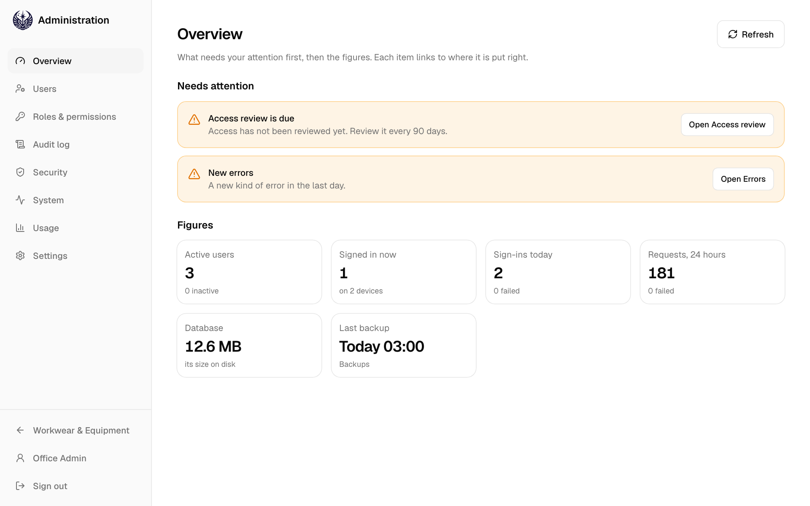
12Users
Administrators only
- Add, edit or deactivate accounts. Give each account one or more roles: a user may do what any of their roles allows. Roles & permissions says what each role allows.
- A role change reaches the user within minutes, without signing in again. A deactivated user is signed out on every device.
- To reset a password, use ⋯ → Reset password….
- You can't deactivate your own account, or take from yourself the role that lets you manage users or roles. Someone active always holds Administrator.
- If you signed in more than 12 hours ago, the app asks you to Confirm your password before saving the change.
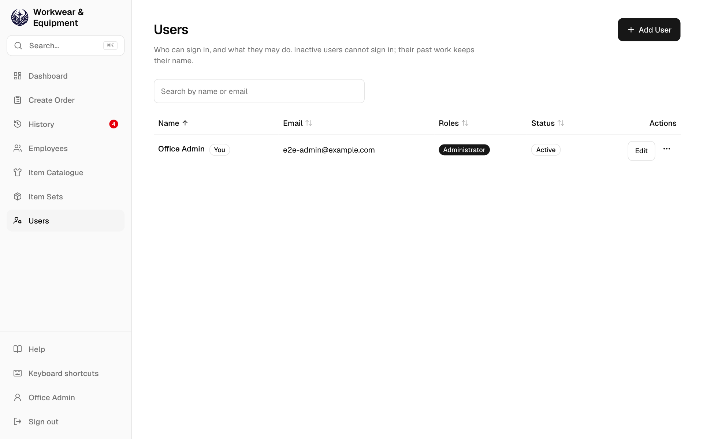
13Roles & permissions
Administrators only
Roles & permissions lists each role, what it allows and how many users hold it. A role is a set of permissions, such as Manage Item Catalogue or Delete employees. You give roles to users on Users.
- Administrator, Manager and Employee are built in. Administrator can do everything and cannot be changed: View shows what it allows. You can change what Manager and Employee allow, but not their names or descriptions, and you cannot delete them.
- Add Role makes a new one: a name, what it is for, and its permissions. Some permissions need another, which is ticked with them: Manage users needs See users.
- A change reaches the users who hold the role within minutes.
- ⋯ → Delete role… deletes a role that no user holds. Take it from its users on Users first.
- If you signed in more than 12 hours ago, the app asks you to Confirm your password before saving the change.
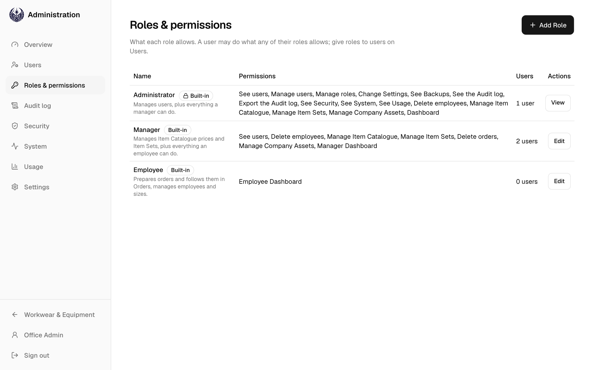
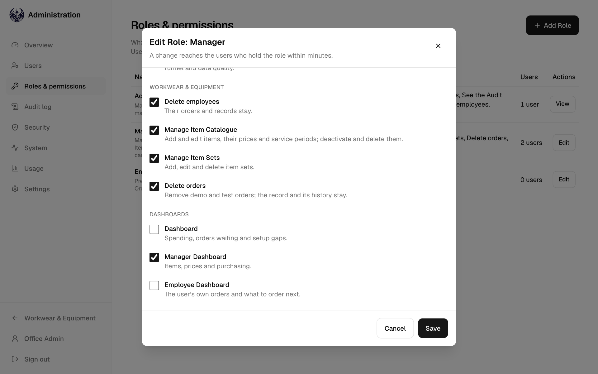
14Audit log
Administrators only
Audit log lists every recorded change: what changed, who made it, when, and where. A change is made in Workwear & Equipment, in Administration, through an employee's Confirmation link, or by the System itself.
Filter by Area, Change, Person and dates. Click a change to open it beside the list. It shows each field before and after, and Open in Workwear & Equipment opens the record. All changes to this record narrows the list to it.
- Seals, at the top: each day's changes are sealed an hour after the day ends, with a hash that also covers the day before, so a change altered, added or removed afterwards shows. Verify checks every seal again; the app also checks them every hour.
- Each seal also gets a timestamp: a public timestamp service signs the seal with the time. A seal made again later cannot get the original time, so not even someone with access to the server can rewrite the log unnoticed. The panel says through which day the seals are timestamped.
- If a sealed day does not match, or its timestamp is wrong, late or missing, the Overview says so. Tell whoever runs the server, and keep the backups from before that day.
- Export downloads the changes the filters select, between two days at most a year apart, as CSV, for a spreadsheet or JSON lines, for an archive. The export is itself recorded on the Audit log.
- Changes are kept for years (10, unless the server is set otherwise), then deleted a day at a time.
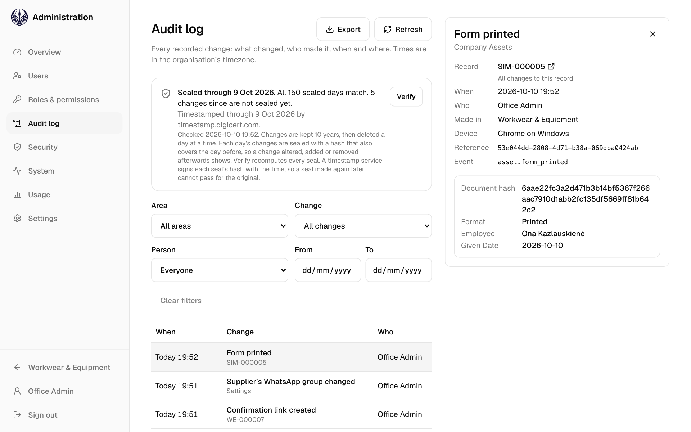
15Security
Administrators only
Security has three tabs:
- Sign-ins: every sign-in, failed attempt, confirmed password and sign-out, with the account, the address it came from and the device. Filter by event, person and dates. A failed attempt says why, such as Wrong password. Sign-in records are kept 180 days.
- Signed-in devices: every browser someone is signed in on now. Sign out a device that is lost or not recognised: that person must sign in again there, with their password.
- Access review: every user with their roles, what those allow, and their last sign-in. Administrators, and accounts not used for 90 days, are marked. Check that each still needs their access, change it on Users, then choose Mark as reviewed. Do it every 90 days: the Overview reminds you.
Copied sign-in stopped means someone used an old copy of a sign-in, so it was ended on every device that held it. Ask the user whether it was them. If not, have them change their password.
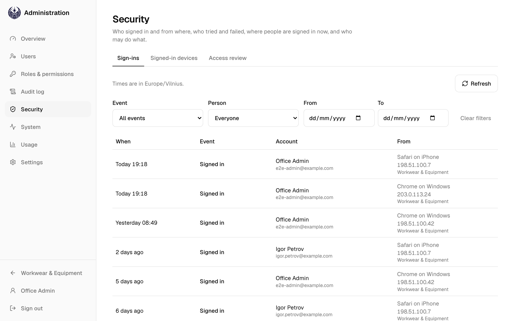
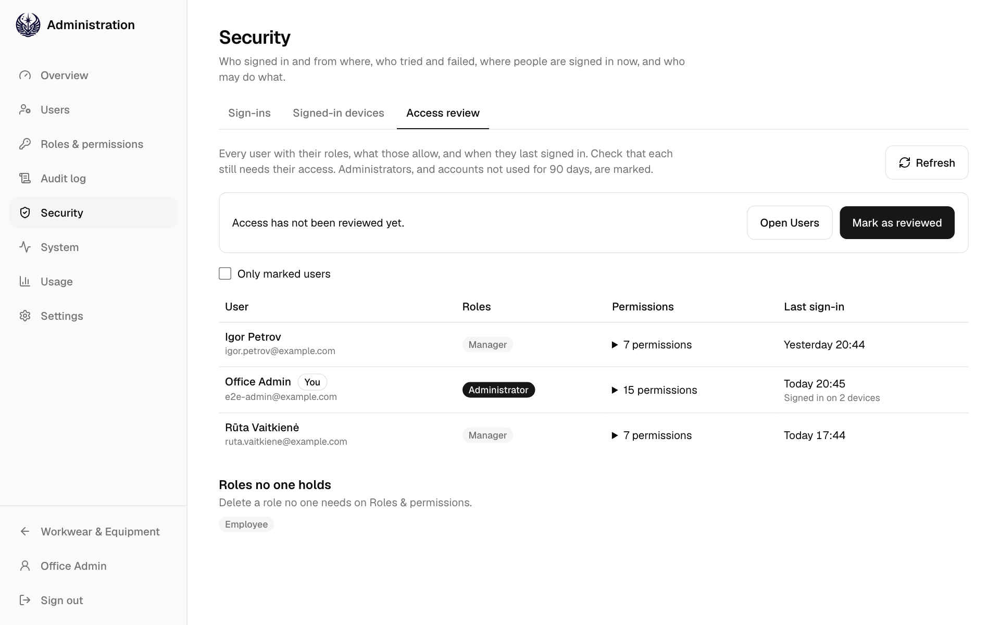
16System
Administrators only
System shows how the app is running. It has three tabs: Status, Errors and Backups.
- Status: whether the app is Ready, its version and when it started; the last 24 hours of requests, how many failed and how long they took; the database's size and latest migration; and how long sign-ins, errors and changes are kept.
- Errors: what went wrong, on the server or in someone's browser, with how many times and when last. Open one to see who met it, where and on what device. Errors are kept 30 days.
- Backups: below.
When something goes wrong, the app shows a Reference, such as 9f2c1a7e. The error on Errors shows the same reference. Pass it on to whoever runs the server: it finds the error in the server's log.
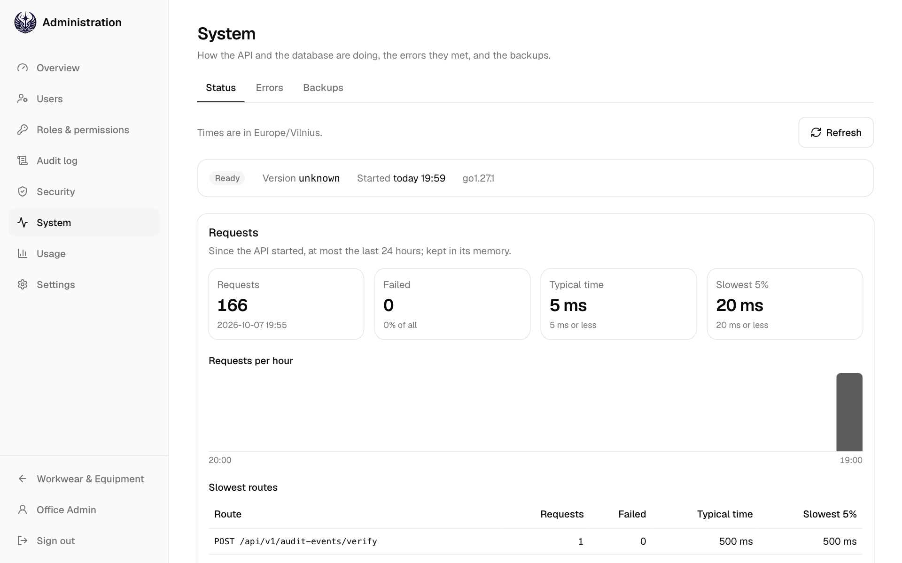
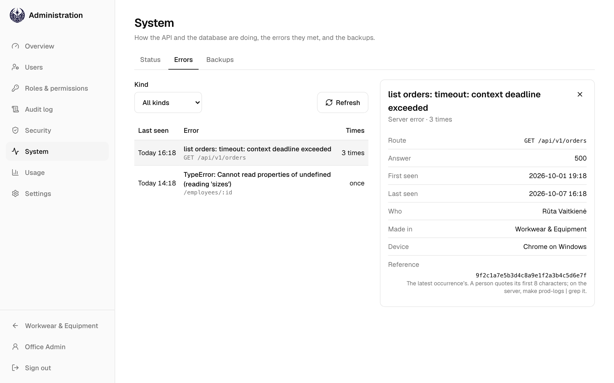
17Backups
Administrators only
System → Backups shows whether the database is backed up. The backup service on the server copies the whole database on a schedule, every night unless set otherwise, and deletes old copies after the retention period.
The line at the top says whether all is well. It turns red when the last backup failed, when a scheduled one is overdue, or when the service has stopped reporting. Tell whoever runs the server.
A second warning shows while the backups are kept only on the server itself, because they would be lost with it.
- Last backup and Next backup: when, with the last one's size and how long it took.
- Stored and Total size: the backups kept now.
- Recent backups: every attempt, newest first, with the error of a failed one.
- Settings: the schedule, where backups are saved, how long they are kept and whether they are encrypted.
The settings are made on the server, and a backup is restored there too: the app only shows them.
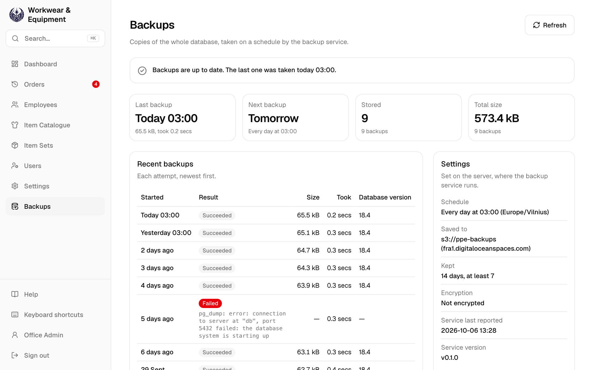
18Usage
Administrators only
Usage shows how the apps are used. No page is tracked: everything comes from what the app records anyway.
- At the top: the people active today, in the last 7 and in the last 30 days, out of the active accounts, and today's sign-ins.
- Active people per day, by app, with a line for each role. Sign-ins per day, with the failed ones.
- Confirmation links, last 90 days: how many links employees were sent, opened and confirmed, and how many are still waiting, expired or were replaced.
- Changes per week, by area, darker for more, and the people who made the most.
- Devices, last 30 days and Languages: phones, tablets and computers with their systems and browsers, and the languages of users and employees.
- Data quality, last 90 days: employees without sizes, and items without a price or service period. Fewer is better.
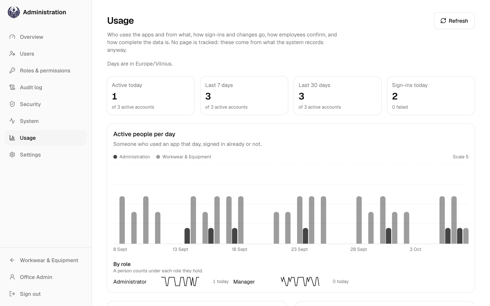
19Settings
Administrators only
Supplier's WhatsApp group: enter the group's name and its invite link. In WhatsApp, open the group, tap its name, then Invite via link and Copy link.
Copy for WhatsApp then offers to open that group, where you paste the order message. WhatsApp cannot open a group with the message already typed in. Remove the group goes back to opening WhatsApp without a chat chosen.
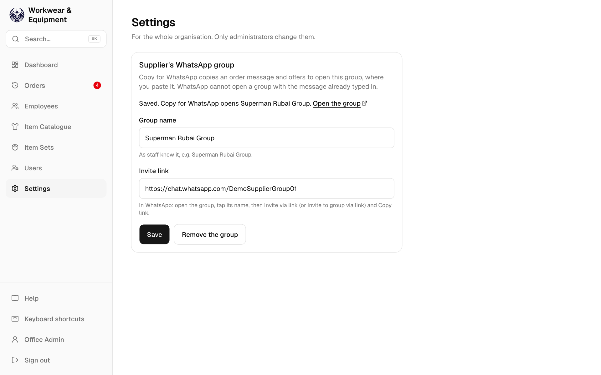
20Your account
- Language: English, Lietuvių or Русский. The choice is saved on your account, so every device you sign in on uses it. The employee's confirmation page and the record stay in English and Russian.
- Theme: Light, Dark or System, which follows the device. It is kept on this device, and the sign-in page uses it too.
- Change password: your other devices are signed out, and this one stays signed in.
- Signed-in devices: every browser you are signed in on, with when it was last used. This device comes first. Sign out a device you no longer use or do not recognise, or choose Sign out all other devices.
- Table rows: Compact fits more rows on the screen.
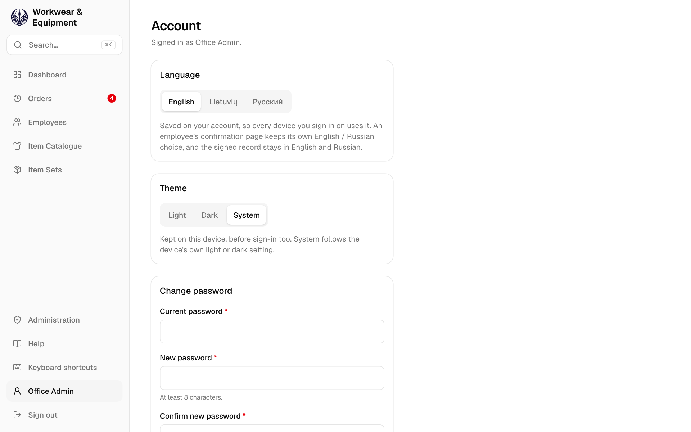
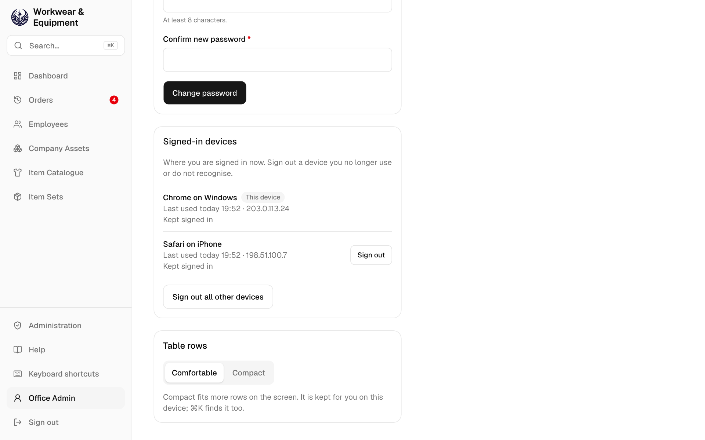
21Search and shortcuts
| Key | Does |
|---|---|
| ⌘K / Ctrl K | Search record numbers, employees, items and screens. For example, type a name, then choose New order for …. |
| / | Go to the search or Add Item field. |
| G then D O H E C S U | Go to Dashboard, Create Order, Orders, Employees, Catalogue, Item Sets or Users (in Administration). |
| J / K, Esc | Move through Orders, or close the open order. |
| ⌘/Ctrl Enter | On Create Order, review the order. |
| ? | Show all shortcuts. |
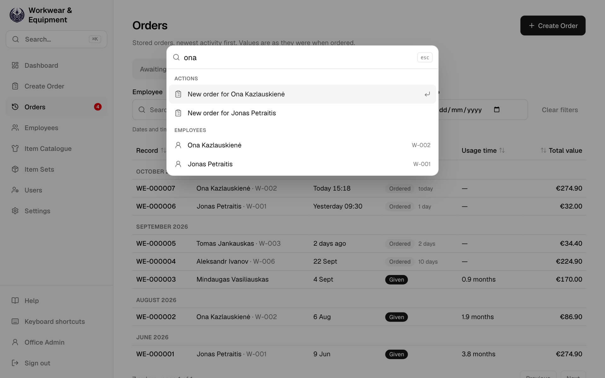